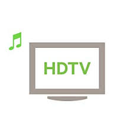

The First and Largest Full HD Digital TV, Internet & Fiber Optic Network in Tamilnadu. VK Digital hosts a robust network that forms the basis of our Fiber Optic digital TV & Internet services to the consumers.
| 
|
High speed internet Services |
|
|---|
VK Digital aims to provide true digital experience that would deliver content at 1080P Full HD and beyond. VK Digital encompasses decades of experience in the area of Media & Broadcasting to Consumer homes. VK is backed up with rich experience, well established group companies and highly young and dynamic entrepreneurs with the vision of providing high quality content and digital solutions to the consumers of emerging digital Media and Entertainment.
VK Digital was promoted mainly to serve the consumers of media and entertainment industry with rich and high quality digital TV experience. We provide high-end digital Signals and MSO services.